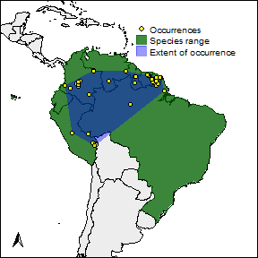

rangemap short tutorial I
Marlon E. Cobos, Vijay Barve, Narayani Barve, Alberto Jiménez-Valverde, and Claudia Nuñez-Penichet
2021-09-13
Source:vignettes/rangemap_short_tutorial_I.Rmd
rangemap_short_tutorial_I.Rmd
Package description
The rangemap R package presents various tools to create species range maps based on occurrence data, statistics, and SpatialPolygons objects. Other tools of this package can be used to analyze environmental characteristics of the species ranges and to create high quality figures of these maps.
Functions in this package
The main functions of this package are:
- rangemap_explore, generates simple figures to visualize species occurrence data in the geographic space before using other functions of this package.
- rangemap_boundaries, generates a distributional range for a given species by considering all the polygons of administrative entities in which the species has been detected.
- rangemap_buffer, generates a distributional range for a given species by buffering provided occurrences using a defined distance.
- rangemap_enm, generates a distributional range for a given species using a continuous raster layer produced with an ecological niche modeling algorithm.
- rangemap_hull, generates a distributional range for a given species by creating convex or concave hull polygons based on occurrence data.
- rangemap_tsa, generates distributional range for a given species using a trend surface analysis.
- rangemap_plot, generates customizable figures of species range maps using objects produced by other functions of this package.
- ranges_emaps, represents one or more ranges of the same species on various maps of environmental factors (e.g., climatic variables) to detect implications of using one or other type of range regarding the environmental conditions in the areas.
- ranges_espace, generates a three dimensional comparison of a species’ ranges created using distinct algorithms, to visualize implications of selecting one of them if environmental conditions are considered.
All the functions that create species ranges also generate an approach to the species extent of occurrence (using convex hulls) and the area of occupancy according to the IUCN criteria. Shapefiles of the resultant polygons can be saved in the working directory if it is needed.
Data in this package
The data included in this package are:
- country_codes, a dataset containing codes for identifying countries according to ISO norms.
- adm_area_names, a dataset containing names of all the available administrative areas from the GADM data base. Names describe distinct administrative areas in five levels.
- adm_boundaries, a SpatialPolygonsDataFrame of 9 countries from South America.
- buffer_range, sp_range* object based on buffers containing the results of the function rangemap_buffer.
- cvehull_range, a sp_range* object based on concave hulls. This contains the results of the function rangemap_hull.
- cxhull_range, a sp_range* object based on convex hulls. This contains the results of the function rangemap_hull.
- spdf_range, a SpatialPolygonsDataFrame representing the distribution of a species from North America.
-
Examples of occurrences data:
- occ_f, a dataset containing geographic coordinates of the Giant Cuban Toad.
- occ_d, a dataset containing geographic coordinates of a South American armadillo.
- occ_p, a dataset containing geographic coordinates of a Caribbean toad.
- occ_train, a dataset containing geographic coordinates of a North American tick.
A small example
Reading and exploring the species occurrence data
Let’s read the species records and check how the are geographically distributed using the rangemap_explore function.
# Getting the data
data("occ_f", package = "rangemap")
# checking which countries may be involved in the analysis
par(mar = rep(0, 4)) # optional, reduces the margins of the figure
rangemap_explore(occurrences = occ_f)
rangemap_explore(occurrences = occ_f, show_countries = TRUE)Species range based on administrative areas
Let’s check the rangemap_boundaries function’s help to be aware of all the parameters.
help(rangemap_boundaries)Defining parameters and reading the data
# Getting the data
data("occ_d", package = "rangemap")
# preparing arguments
level <- 0 # Level of detail for administrative areas
adm <- "Ecuador" # Although no record is on this country, we know it is in Ecuador
countries <- c("PER", "BRA", "COL", "VEN", "ECU", "GUF", "GUY", "SUR", "BOL") # ISO names of countries involved in the analysisNow we can create the species range based on administrative areas
b_range <- rangemap_boundaries(occurrences = occ_d, adm_areas = adm,
country_code = countries, boundary_level = level)If you want to save the results of this analysis as shapefiles try using the parameters save_shp and name.
save <- TRUE # to save the results
name <- "test" # name of the results
b_range <- rangemap_boundaries(occurrences = occ_d, adm_areas = adm,
country_code = countries, boundary_level = level,
save_shp = save, name = name)Plotting your results
The function rangemap_plot will allow you to produce a nice figure of your results.
Check the function’s help to be aware of all the parameters.
help(rangemap_plot)Now the figures. One with the species range only.
# arguments for the species range figure
extent <- TRUE
occ <- TRUE
legend <- TRUE
# creating the species range figure
par(mar = rep(0, 4))
rangemap_plot(b_range, add_EOO = extent, add_occurrences = occ,
legend = legend)The other one with the potential extent of occurrence, the species occurrences and other map details. But let’s first define the characteristics we want in the figure.
extent <- TRUE # adds the extent of occurrence of the species to the figure
occ <- TRUE # adds the occurrence records of the species to the figure
legend <- TRUE # adds a legend to the figure
leg_pos <- "topright" # position of the legend in the figure
north <- TRUE # adds a north arrow to the figure
n_pos <- "bottomleft" # position of the north arrow
par(mar = rep(0, 4), cex = 0.8)
rangemap_plot(b_range, add_EOO = extent, add_occurrences = occ,
legend = legend, legend_position = leg_pos,
northarrow = north, northarrow_position = n_pos)